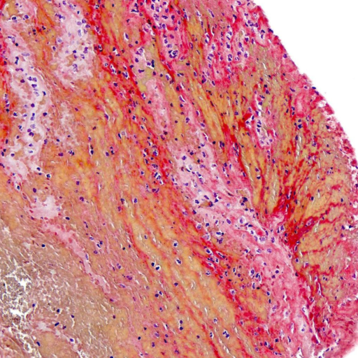
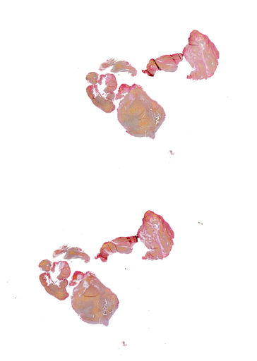
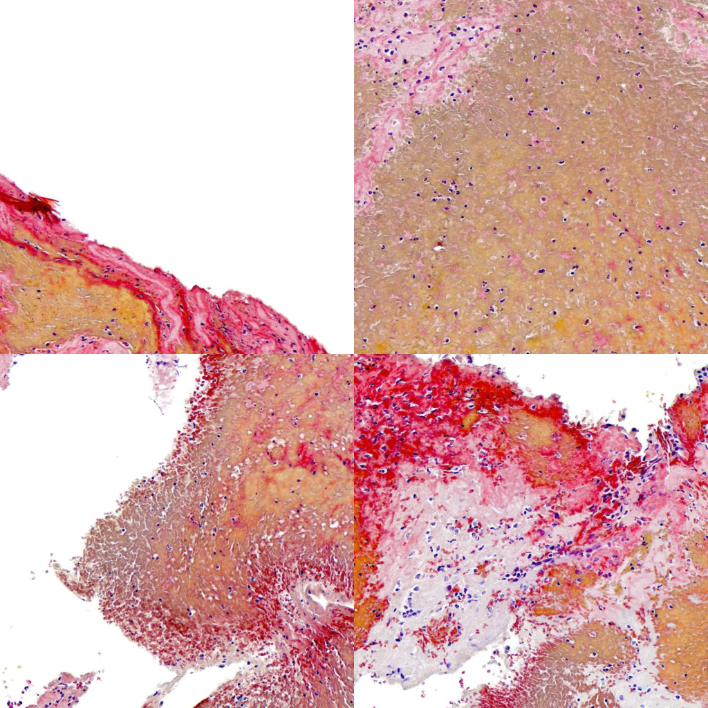

#! conda install -c conda-forge openslide
#! pip install openslide-pythonHandling Large Image Files
Handling Large Image Files
How to create png files of reasonable size from huge tifs.

Handling Large Image Files
Large image files, like the histologic slides I’m working with here, are usually saved as .tif or other related file formats like .svs.
With the opensilde library, these images can easily be opened and working with.
Every slide is a collection of several variants of the same image in different resolutions. These are called levels.
The easiest way the install the library is to use the Anaconda Package Manager by using the following command:
conda install -c conda-forge openslide
and then
pip install openslide-python
import openslide
import itertools
from PIL import Image
from pathlib import Path
import numpy as np
from tqdm import tqdm
from functools import partial
# on M1 Max Chips the `multiprossesing` library doesn't work
# this 'drop-in' library needs to be installed with 'pip install multiprocess'
import multiprocess as mp
# if you're working on an intel of amd chip just use
# import multiprocessing as mp
# instead.An OpenSlide object is created by simply passing it the filename. Here I’m using an histologic image of blood cloth from the Mayo Clinic - Strip AI competition hosted on Kaggle.
p_slide = Path("0af8b6_0.tif")
slide = openslide.OpenSlide(p_slide)
slide.dimensions(24217, 34108)These images can be huge. A quick way to get resized images, is to use the get_thumbnail function:
image = slide.get_thumbnail((512, 512))
print(type(image))
image<class 'PIL.Image.Image'>
This function returns us a PIL Image, which means we could save this as a resized png with just one more line.
image.save("resized.png")A more sophisticated way of creating smaller images of such slides is to tile them.
First, we build a function that gives us the coordinates of tiles in a specific (resolution) level. Levels are ordered in descending resolution, so level 0 corresponds to the image with the highest resolution.
tile_size = 1024def get_tiles(slide, level=0, tile_size=1024):
level_x, level_y = slide.level_dimensions[level]
n_x = level_x // tile_size
n_y = level_y // tile_size
x_off = (level_x % n_x) // 2
y_off = (level_y % n_y) // 2
tiles = []
for tx, ty in list(itertools.product(list(range(n_x)), list(range(n_y)))):
tiles.append((int(x_off + tx * tile_size), int(y_off + ty * tile_size)))
return tiles
tiles = get_tiles(slide, tile_size=tile_size)
len(tiles)759# Many tiles will be (almost) empty, so this is a quick way to find
# tiles with little to no tissue.
def enough_tissue(im, threshold=0.9):
im = np.array(im) / 255.
return im.sum() / im.size < threshold
def compute_tile(
slide,
tile,
tile_dir,
p_slide,
tile_size=1024,
level=0,
remove_alpha=True,
resize_tile_size=(512, 512)):
im = slide.read_region(tile, level, (tile_size, tile_size))
im = im.resize(resize_tile_size, Image.Resampling.BILINEAR)
if remove_alpha: im = im.convert("RGB") # Remove the alpha channel
if enough_tissue(im):
im.save(str(tile_dir/f"{p_slide.stem}_{tile_size}_{tile[0]}_{tile[1]}.png"))
def compute_tile_mp(
tile,
tile_dir,
p_slide,
tile_size=1024,
level=0,
remove_alpha=True,
resize_tile_size=(512, 512)):
# Every subprocess needs its own OpenSlide object
slide = openslide.OpenSlide(p_slide)
im = slide.read_region(tile, level, (tile_size, tile_size))
im = im.resize(resize_tile_size, Image.Resampling.BILINEAR)
if remove_alpha: im = im.convert("RGB") # Remove the alpha channel
if enough_tissue(im): # I'm not intested in tiles with little to no tissue
im.save(str(tile_dir/f"{p_slide.stem}_{tile_size}_{tile[0]}_{tile[1]}.png"))# Create a directory to save the tiles in
tile_dir = Path("tiles")
tile_dir.mkdir()# This is the simpler and slower way
# Use this code if you only have 1 cpu
#for tile in tqdm(tiles):
# compute_tile(slide, tile, tile_dir, p_slide, tile_size=tile_size)Using multiple cores speeds this up significantly.
tile_func = partial(
compute_tile_mp,
tile_dir=tile_dir,
p_slide=p_slide,
tile_size=tile_size)
with mp.Pool() as P: P.map(tile_func, tiles)Let’s look at 4 random tiles we just generated
random_tiles = np.random.choice(list(tile_dir.iterdir()), size=4)
hstacks, vstacks = [], []
for p_tile in random_tiles:
hstacks.append(np.array(Image.open(p_tile)))
if len(hstacks) == 2:
vstacks.append(np.hstack(hstacks))
hstacks = []
im_arr = np.vstack(vstacks)
Image.fromarray(im_arr)
And now we have highly detailed crops of our original slide.